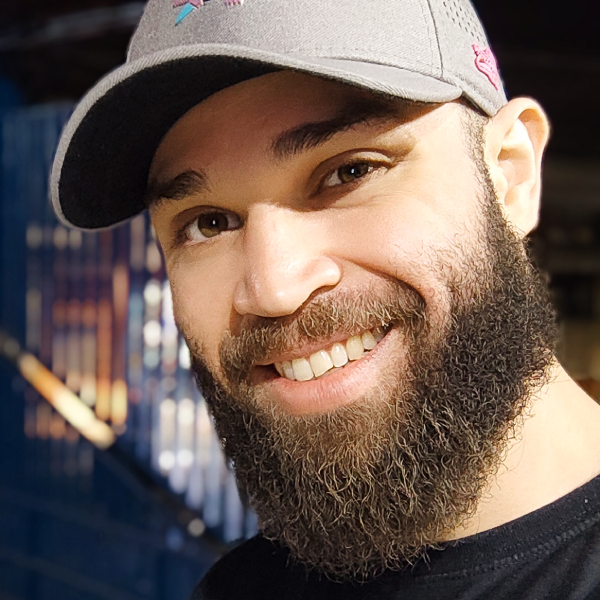

Lucas Larocca
Front-end Developer
Desenvolvedor Front-end desde 2021, apaixonado por tecnologia, games e viagens. Acredito que nossas vidas são movidas por desafios e busco contínuamente me superar através deles. Meu desafio atual consiste no aprimoramento dos meus conhecimentos e habilidades para que eu possa concluir meu projetos pessoais e consolidar assim meu nome no mercado. Deixando ao longo do caminho não apenas códigos, mas sim um legado do qual eu possa me orgulhar. Residente em São Paulo, Brasil. Meu CV completo.
lucassouzalarocca@gmail.com